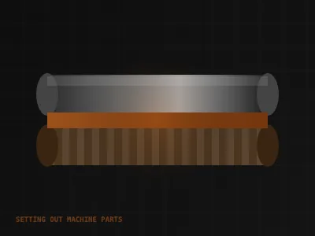

Setting Out
Machine Parts
Spare parts and consumables for leather setting out and sammying machines — felt sleeves, through-feed setting out felts, blades for opening the hides, blade cylinders and rollers. Sourced for your machine and quality-checked before they ship.

Reduce Downtime
Keep felt sleeves, setting out felts and opening blades on the shelf. When the spreading action drops, swap the wear part and your setting out line is back in production in minutes, not days.
Higher Area Yield
Fresh felts and sharp opening blades restore a clean spreading action — flatter hides, fewer wrinkles and a certified surface increase that pays for the part many times over.
Matched To Your Machine
Felt sleeves, through-feed felts and spare parts identified against your exact machine model and reference numbers — original and compatible, no minimum order quantity.
Spare Parts for
Setting Out & Sammying
Kymera Group supplies spare parts and consumables for the leather setting out and sammying machines used in tanneries worldwide. The setting out machine works after the wet stages: it removes excess water from the hide and opens, widens and flattens it — eliminating wrinkles and creases by the combined action of rubber rollers and a felt roller contrasted against a blade roller.
From the consumables that touch the leather every cycle — felt sleeves, through-feed setting out felts and the blades for opening the hides — through to structural wear parts like blade cylinders, transport rollers and spreading rollers, we source the right component for your specific machine model. Tell us your brand and model, and we'll match the part, confirm the specification and quote it for you.

The Complete
Setting Out Catalogue
From felt sleeves and setting out felts to opening blades, cylinders and rollers — everything your setting out and sammying machine needs, matched to your model and quality-checked before dispatch.

Felt Sleeves
Felt sleeves for discontinuous setting out and sammying machines — wool, synthetic or mixed, for water absorption and a clean spreading action.
Request a QuoteSetting Out Felts
Synthetic felts for through-feed (continuous) setting out machines, finished for easy sliding of the hides and consistent pressing across the full width.
Request a Quote
Blades for Opening the Hides
Blades that open, spread and flatten the hide as it passes through the machine — restore a clean, consistent spreading action and a higher area yield.
Request a QuoteBlade Cylinder
Blade cylinders for setting out and sammying machines — balanced and ready to install on the major brands for a uniform result with no marks.
Request a QuoteRubber Transport Rollers
Rubber transport rollers for reliable, mark-free hide feeding through setting out and sammying machines — precision-machined to specification.
Request a QuoteSpreading Roller
Spreading rollers that open and stretch the hide before the blade cylinder, for a uniform setting out result and a certified surface increase.
Request a QuoteGeneral Spare Parts
Bearings, seals, drive components and wear parts for setting out and sammying machines — tell us your brand and model and we'll identify the part.
Request a QuoteSetting Out, Step by Step
Between the wet and drying stages, the setting out machine removes water and opens the hide. Rubber and felt rollers press against a blade roller to spread, flatten and condition the leather — here is the cycle on the production floor.
Feed the Hide
The wet hide enters the machine on the transport rollers, positioned flat and square for an even, mark-free pass through the press.
Press & Sam
Rubber and felt rollers press the hide against the blade roller, squeezing out excess water — the felts absorb the moisture and need regular replacement.
Open & Spread
The blades open and stretch the hide, smoothing wrinkles and creases and increasing the surface area for a uniform, flat result.
Stack & Dry
The conditioned hide leaves flat and de-watered, ready for drying or shaving with a smooth, compact fibrous structure.
Your Questions,
Answered
What does a setting out machine do?
A setting out (or sammying and setting out) machine works after the wet stages to remove excess water from the hide and to open, widen and flatten it — smoothing wrinkles and creases for a uniform surface and a higher area yield. The work is done by rubber rollers and a felt roller contrasted against a blade roller.
Which setting out and sammying machine brands do your spare parts fit?
Our parts and felts are compatible with the most widespread brands, including Rizzi, Mosconi, Aletti, CM, Escomar and Bauce. Tell us your machine model and we will confirm the correct part for you.
What is the difference between felt sleeves and through-feed felts?
Felt sleeves are used on discontinuous setting out machines and can be wool, synthetic or mixed. Through-feed (continuous) machines use synthetic setting out felts with a special finish that lets the hides slide easily. We supply both — tell us your machine type and we'll advise the correct option.
What are the blades for opening the hides used for?
The blades open, spread and flatten the hide as it passes through the machine, eliminating wrinkles and stretching the leather for a uniform surface. Worn blades reduce the spreading action and area yield, so they are a regular replacement part.
Is there a minimum order quantity?
No. We supply felts, sleeves, blades and spare parts with no minimum order quantity — a single felt sleeve, a set of opening blades or a complete consumables package, with the same care.
Can you help identify the right part for my setting out machine?
Yes. Send us your setting out or sammying machine brand, model and a photo or reference number of the worn part — our team will identify the correct replacement and quote it for you.
Send Your Request
Tell us your setting out or sammying machine brand and model, the part you need and the quantity — we'll come back to you with the right component, the right price, and a clear lead time.